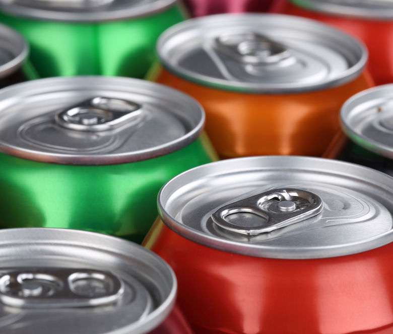
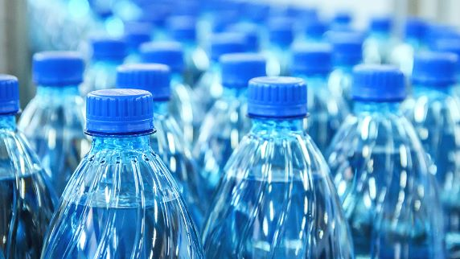

BE GREEN FOR MORE GREEN
 
🤨HOW MUCH CAN YOU MAKE?🤨
| State | Amount of Money | Containers |
|---|---|---|
| California | 5¢ (<24 oz.) 10¢ (≥24oz.) | Any container composed of aluminum, glass, plastic, or bi-metal |
| Connecticut | 5¢ | Any sealed bottle, can, jar, or carton composed of glass, metal or plastic |
| Hawaii | 5¢ | Any container up to 68 oz. composed of aluminum, bi-metal, glass, or plastic |
| Iowa | 5¢ | Any sealed bottle, can, jar, or carton composed of glass, metal or plastic |
| Maine | 15¢ (wine/liquor)
5¢ (all others) |
Any sealed container of four liters or less composed of glass, metal or plastic |
| Massachusetts | 5¢ | Any sealable bottle, can, jar, or carton composed of glass, metal, plastic, or a combination; |
| Michigan | 10¢ | Any airtight container under one gallon composed of metal, glass, paper, or plastic |
| New York | 5¢ | Any sealed bottle, can, or jar less than one gallon composed of glass, metal, aluminum, steel, or plastic |
| Oregon | 10¢
2¢ (standard refillable) |
Any sealed bottle, can, or jar composed of glass, metal or plastic |
| Vermont | 15¢ (liquor)
5¢ (all others) |
Any bottle, can, jar, or carton composed of glass, metal, paper, plastic, or a combination |
| Guam | 5¢ | Any sealed glass, metal, or plastic container up to 64 oz. |
🤑OTHER WAYS TO MAKE SOME MONEY🤑
- Ink cartridges can be recycled at Office Max and Staples, earning you some rewards. (about $2 worth of store credit per empty ink cartridge).
-You can sell ink cartridges on sites like eBay or Craiglist. Some people have sold sets of empty ink cartridges on this sites for a good amount of money.
-Recycling scraps of metal to your nearest scrapyard can earn you a few bucks. You can use the iScrap App to locate the nearest scrapyard to you.
-Apps like Gazelle and Eco-Cell allow you to sell you old, used phones or sometimes other technologies. (Eco-Cell accepts rechargeable batteries).
-You can recycle old car batteries to Advance Auto and Autozone.